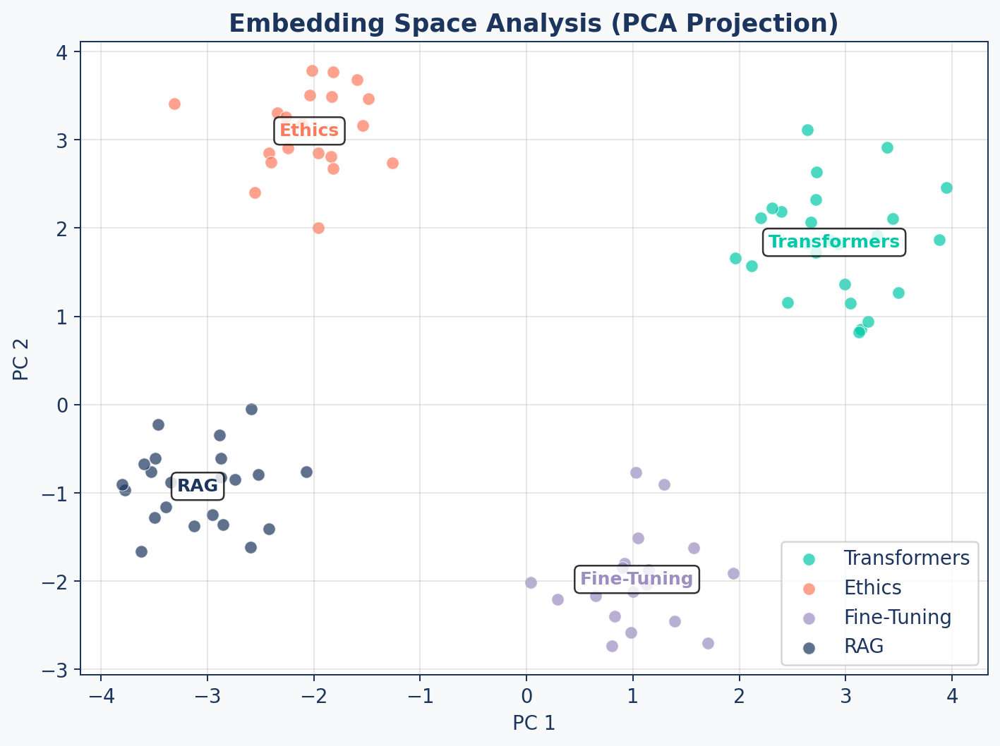

flowchart LR
Q["Query"] --> R["Retrieve<br/>Documents"]
R --> E{"Evaluate<br/>Relevance"}
E -- "High<br/>Confidence" --> P["Pass Through"]
E -- "Ambiguous" --> F["Filter Noise<br/>+ Supplement"]
E -- "Incorrect" --> W["Discard +<br/>Web Search"]
P & F & W --> G["LLM<br/>Generation"]
style Q fill:#9B8EC0,stroke:#1C355E,color:#fff
style R fill:#00C9A7,stroke:#1C355E,color:#fff
style E fill:#FF7A5C,stroke:#1C355E,color:#fff
style P fill:#00C9A7,stroke:#1C355E,color:#fff
style F fill:#9B8EC0,stroke:#1C355E,color:#fff
style W fill:#FF7A5C,stroke:#1C355E,color:#fff
style G fill:#1C355E,stroke:#1C355E,color:#fff
From Context to Answer
RAG Foundations & Data Pipelines — Session 5
2026-02-28
A. Citation-Aware Prompting
Designing prompts for grounded generation
Agenda
- A. Citation-Aware Prompting — Grounded generation with sources
- B. Context Window Management — Token budgets and pruning
- C. Retrieval Evaluation — Hit Rate, MRR, Precision, Recall
- D. Generation Evaluation — LLM-as-Judge with DeepEval
- E. Evaluation Pipeline — Golden datasets and CI/CD
- F. Wrap-up — The complete evaluation framework
Grounded Prompting
Generic Prompt
"Answer based on the context."- Vague instruction
- No citation requirement
- No fallback behavior
- Hallucinations slip through
Grounded Prompt
"Answer using ONLY the context.
Cite sources as [1], [2].
If not in context, say so."- Strict faithfulness rules
- Required attribution
- Explicit refusal behavior
- Measurable compliance
Citation Template
CITATION_SYSTEM_PROMPT = """You are a rigorous Research
Assistant. Answer using ONLY the provided context.
Rules:
1. Cite sources using [ID] format.
Example: "Transformers use self-attention [1]."
2. If multiple sources, cite all: [1][2].
3. If not in context, state:
"I cannot find this in the provided sources."
4. Provide detailed explanations when context allows.
"""Context Formatting
def format_context_with_ids(results):
"""
[1] (Title: Attention Is All You Need)
Transformers use self-attention to process...
[2] (Title: BERT Analysis)
BERT demonstrated that pre-training on...
"""
formatted = []
for i, doc in enumerate(results, 1):
title = doc['metadata'].get('title', 'Unknown')
header = f"[{i}] Title: {title}"
formatted.append(f"{header}\n{doc['text']}")
return "\n\n".join(formatted)Input / Output Example
Input:
Context: [1] Title: FlashAttention Paper — FlashAttention is an IO-aware exact attention algorithm that uses tiling to reduce memory reads/writes…
Question: What is FlashAttention?
Output:
FlashAttention is an IO-aware exact attention algorithm that uses a tiling approach to reduce the number of memory reads and writes between GPU high-bandwidth memory (HBM) and on-chip SRAM [1]. This makes it significantly faster than standard attention implementations while producing mathematically identical results [1].
B. Context Window Management
Staying within token budgets
The Overflow Problem
Problem: You retrieved 20 chunks. That’s 15,000 tokens. Your LLM’s budget is 4,000 tokens for context.
Consequences of overflow:
- API error (context too long)
- Truncation (losing relevant content)
- Higher cost (you pay per input token)
- Diluted attention (LLM struggles with too much)
Token Counting
import tiktoken
def fit_context_to_budget(results, max_tokens=3000,
model="gpt-4"):
"""Select as many results as fit in the budget."""
encoding = tiktoken.encoding_for_model(model)
current_tokens = 0
selected = []
for doc in results:
text_tokens = len(encoding.encode(doc['text']))
overhead = 50 # metadata formatting
if current_tokens + text_tokens + overhead > max_tokens:
break
selected.append(doc)
current_tokens += text_tokens + overhead
return selectedUpgraded RAGService
async def answer_with_citations(self, query):
# 1. Retrieve (Advanced Retrieval)
results = await self.retriever.retrieve(query)
# 2. Prune to fit context window
pruned = fit_context_to_budget(results, max_tokens=4000)
# 3. Format with citation IDs
context = format_context_with_ids(pruned)
# 4. Generate with citation prompt
messages = [
{"role": "system", "content": CITATION_SYSTEM_PROMPT},
{"role": "user",
"content": f"Context:\n{context}\n\nQuestion: {query}"}
]
response = await self.llm.chat(messages=messages)
return {"answer": response,
"citations_used": pruned}Streaming
UX Impact
Users generally perceive streaming responses as significantly faster than waiting for a complete response, even when total time is the same.
C. Retrieval Evaluation
Measuring retrieval quality with data, not feelings
Why Evaluate?
“It returns results” is not the same as “it returns the right results.”
- Poor retrieval = #1 source of hallucination
- You can’t optimize what you can’t measure
- Changes to chunking/embedding can silently break retrieval
- Evaluation enables data-driven decisions
Golden Dataset
RETRIEVAL_BENCHMARK = [
{
"query": "What are ethical guidelines for AI?",
"relevant_chunk_ids": [
"doc_ethics_sec2_chunk0",
"doc_ethics_sec3_chunk1"
]
},
{
"query": "Explain transformer self-attention.",
"relevant_chunk_ids": [
"paper_attention_chunk2",
"paper_attention_chunk3"
]
},
# ... 20-50 curated examples
]Manually curated query → expected document pairs. This is your ground truth.
Hit Rate@K
“Did we find something useful in the top K?”
\[\text{Hit Rate@K} = \frac{\text{queries with at least 1 relevant doc in top K}}{\text{total queries}}\]
MRR (Mean Reciprocal Rank)
“How quickly do we find the first useful result?”
\[\text{MRR} = \frac{1}{N} \sum_{i=1}^{N} \frac{1}{\text{rank}_i}\]
| Query | First Relevant at Rank | Reciprocal Rank |
|---|---|---|
| Query 1 | 1 | 1.000 |
| Query 2 | 3 | 0.333 |
| Query 3 | 2 | 0.500 |
| MRR | 0.611 |
Precision & Recall
Precision@K
“How much of what we show is good?”
\[P@K = \frac{\text{relevant in top K}}{K}\]
Critical for: UI real estate, user trust, chat assistants
Recall@K
“How much of all the good stuff did we find?”
\[R@K = \frac{\text{relevant in top K}}{\text{total relevant}}\]
Critical for: legal discovery, exhaustive search, research
Precision/Recall Trade-off

Which Metric When?
| Use Case | Primary Metric | Why |
|---|---|---|
| Chat assistant | Precision@1 | First answer must be correct |
| Search results page | Precision@5 | Every result visible must be good |
| Legal discovery | Recall@K | Must find ALL relevant precedents |
| General QA | MRR | Quickly finding the best result |
| Quick health check | Hit Rate@5 | “Is it working at all?” |
Corrective RAG (CRAG)
Retrieval quality is evaluated automatically — a corrective action is taken based on confidence.
CRAG — When to Use
Best fit for:
- Noisy corpora — many tangentially-related documents reduce retrieval precision
- Time-sensitive knowledge — internal docs may be outdated; web fallback provides freshness
- High-stakes domains — medical, legal, financial, where a wrong answer is worse than no answer
| Factor | Impact |
|---|---|
| Web fallback latency | +1–3 seconds per corrected query |
| Knowledge freshness | Dramatically improved for dynamic topics |
| Implementation cost | Requires a relevance evaluator + fallback retriever |
Self-RAG — Adaptive Retrieval
Standard RAG always retrieves regardless of need. Self-RAG lets the model decide.
The model generates reflection tokens inline as it reasons:
| Token | Question the Model Asks |
|---|---|
[Retrieve] |
“Do I need external knowledge here?” |
[IsRel] |
“Is this retrieved passage relevant to the query?” |
[IsSup] |
“Does this passage support my claim?” |
[IsUse] |
“Is my final output useful to the user?” |
For simple factual questions, Self-RAG skips retrieval entirely — saving latency and cost.
Self-RAG vs Standard RAG
| Aspect | Standard RAG | Self-RAG |
|---|---|---|
| Retrieval trigger | Always | Adaptive (on demand) |
| Self-critique | No | Yes (reflection tokens) |
| Latency | Predictable | Variable |
| Simple query overhead | High | Low (skips retrieval) |
| Complex query accuracy | Moderate | Higher |
| Implementation complexity | Low | High (fine-tuned model) |
When to Apply
CRAG when your knowledge base is noisy or incomplete. Self-RAG when query complexity varies widely and retrieval should be selective.
D. Generation Evaluation
Catching silent generation failures
The Silent Failure
The Problem
Retrieval failures are obvious: “No results found.”
Generation failures are silent: The LLM confidently states “The moon is made of green cheese [1].”
We need automated quality checks that catch:
- Hallucinated facts not in the context
- Answers that don’t address the question
- Misattributed citations
LLM-as-Judge
Instead of expensive human review, use a strong LLM (GPT-4) to grade the output of your RAG system.
Judge Prompt: "Given this context and question,
rate the answer's faithfulness 0-1.
Does every claim come from the context?"DeepEval, RAGAS, and other frameworks automate this pattern.
Note: LLM judges can exhibit biases (position bias, verbosity preference). Use consistent prompts and validate judge scores against human spot-checks.
Core Metrics
| Metric | What It Measures | Catches |
|---|---|---|
| Faithfulness | Is every claim from the context? | Hallucinations |
| Answer Relevance | Does it address the question? | Off-topic answers |
| Contextual Precision | Is relevant context ranked high? | Poor retrieval ordering |
All three use “LLM-as-Judge” — a strong model evaluates the output.
DeepEval Setup
from deepeval.metrics import (
FaithfulnessMetric,
AnswerRelevanceMetric,
ContextualPrecisionMetric
)
faithfulness = FaithfulnessMetric(
threshold=0.7, model="gpt-4o", include_reason=True)
relevance = AnswerRelevanceMetric(
threshold=0.7, model="gpt-4o", include_reason=True)
context_precision = ContextualPrecisionMetric(
threshold=0.7, model="gpt-4o", include_reason=True)Test Cases
from deepeval import assert_test
from deepeval.test_case import LLMTestCase
async def test_faithfulness():
result = await rag_service.answer_question(
"What are the benefits of RAG?")
test_case = LLMTestCase(
input="What are the benefits of RAG?",
actual_output=result['answer'],
retrieval_context=[
doc['text'] for doc in result['sources']
]
)
# Fails if faithfulness < 0.7
assert_test(test_case, [faithfulness])E. Evaluation Pipeline
From ad-hoc testing to regression testing
Golden Dataset for Regression
20-50 curated examples. Run on every code change to catch regressions.
Running Tests
def run_regression_test():
dataset = EvaluationDataset()
dataset.add_test_cases_from_json_file(
"data/eval/golden_dataset.json",
input_key="input",
actual_output_key="expected_output",
retrieval_context_key="context"
)
for case in dataset.test_cases:
# Run your actual RAG pipeline
result = rag_service.answer(case.input)
case.actual_output = result['answer']
# Grade with LLM judge
assert_test(case, [faithfulness, relevance])Embedding Analysis
Cluster Distances
A good embedding space has low intra-cluster and high inter-cluster distances.
| Metric | Good | Bad |
|---|---|---|
| Intra-cluster distance | < 0.3 | > 0.5 |
| Inter-cluster distance | > 0.6 | < 0.4 |
| Separation ratio (inter/intra) | > 2.0 | < 1.0 |
These thresholds are rough starting points. Actual “good” values depend on the embedding model and domain — calibrate against your own corpus.
Diagnostic Tool
Run embedding analysis periodically. A sudden drop in cluster separation may indicate document quality issues or embedding model drift.
CI/CD Integration
flowchart LR
A["PR to main"] --> B["Run Retrieval<br/>Eval Suite"]
B --> C["Run Generation<br/>Eval Suite"]
C --> D{"Faithfulness<br/>> 0.8?"}
D -- Yes --> E["Merge PR"]
D -- No --> F["Block +<br/>Alert"]
style A fill:#9B8EC0,stroke:#1C355E,color:#fff
style B fill:#00C9A7,stroke:#1C355E,color:#fff
style C fill:#FF7A5C,stroke:#1C355E,color:#fff
style D fill:#9B8EC0,stroke:#1C355E,color:#fff
style E fill:#00C9A7,stroke:#1C355E,color:#fff
style F fill:#FF7A5C,stroke:#1C355E,color:#fff
Gate every PR on evaluation metrics. A change to chunking can silently break generation quality.
F. Wrap-up
The complete evaluation framework
Complete Evaluation Framework
flowchart TD
A["RAG System"] --> B["Retrieval Eval"]
A --> C["Generation Eval"]
B --> D["Hit Rate@K"]
B --> E["MRR"]
B --> F["Precision/Recall@K"]
B --> G["Embedding Analysis"]
C --> H["Faithfulness"]
C --> I["Answer Relevance"]
C --> J["Contextual Precision"]
D & E & F & G & H & I & J --> K["Dashboard +<br/>CI/CD Gates"]
style A fill:#1C355E,stroke:#1C355E,color:#fff
style B fill:#00C9A7,stroke:#1C355E,color:#fff
style C fill:#FF7A5C,stroke:#1C355E,color:#fff
style K fill:#9B8EC0,stroke:#1C355E,color:#fff
The Feedback Loop
Evaluation is not a one-time task — it’s a continuous feedback loop.
| Step | Action |
|---|---|
| 1. Measure | Run eval suite on current system |
| 2. Diagnose | Identify weakest metric (low recall? hallucinations?) |
| 3. Fix | Adjust chunking, retrieval, or prompts |
| 4. Re-measure | Verify improvement didn’t break other metrics |
| 5. Automate | Add to CI/CD, set up alerts |
Key Takeaways
- Citation-aware prompting with [ID] references ensures attributable answers
- Context window management with token counting prevents overflow and controls cost
- Retrieval metrics (Hit Rate, MRR, Precision, Recall) measure search quality
- Generation metrics (Faithfulness, Relevance) catch silent LLM failures
- Golden datasets enable regression testing across code changes
- CI/CD gates prevent quality degradation from reaching production
Up Next
Lab 5: Build the Evaluation Framework — create a golden dataset, implement retrieval metrics, configure DeepEval, and run your first automated quality assessment.